[Previous Chapter] [Index]
Chapter 9 - Tidbits On Other Highs
LSD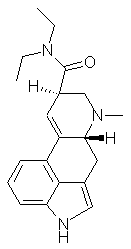 LSD is also known as Lysergic Acid Diethylamide, LSD-25, Acid, and a variety of street names. It is so far the most potent psychedelic with a threshold dose weighing ~50 micrograms (0.00050 grams) in the tartrate salt form. A saturation dose is reached at 500 micrograms (0.5 mg) in most users where the effects reach a maximum. Many people become uncomfortable at 250 micrograms where temporary loss of ego or identity occurs. There are two basic routes to LSD. Those beginning with lysergic acid and those beginning with an amide of lysergic acid (total synthesis
leading to lysergic acid is not considered basic). There are several sources of naturally occurring lysergic acid amides which can be used
to produce LSD. I believe this is a point of confusion for most laymen. Lysergic acid amides are not LSD. They are just that, an amide of
lysergic acid. An amide is generally a compound formed from a carboxylic acid (which lysergic acid is) and an amine (one of which is
diethylamine). LSD is not naturally occurring. Lysergic acid is naturally occurring but in the form of amides.
|
Essential AmphetaminesSafrole is a component of the essential oil of Sassafras. Essential comes from essence and the oil is thus the essence of the smell of Sassafras. There are many other essential oils which contain compounds with allylic double bonds like safrole. These compounds can be used in the syntheses in this book to produce other psychedelic amphetamines. The term amphetamine is used because their structure contain the amphetamine molecule with a few extra substituents. So we have the essential amphetamines. The term was originally coined by Dr. Alexander Shulgin in his book Pihkal. Most of these compounds have been assayed in his book as to dosage, duration, and effects.Elemicin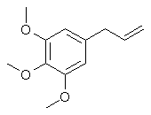 Elemicin is found in Elemi oil from the Philippines and its use in place of safrole yields TMA (100-250 mg/dose), 6-8 hrs duration). An analogue of mescaline where mescaline's apprpximate dosage is 180-260 mg in the HCl salt form.Asarone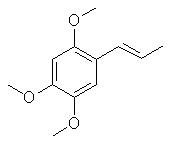 Asarone is the major component of calamus oil (~80%). It is analogous to isosafrole. Replacement of isosafrole with asarone would yield TMA-2 (20-40 mg/dose, 8-12h).Apiole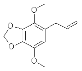 Apiole is a major component of parsley seed oil. It is also a component in parsley and fennel oil. These oils are all readily commercially available.Dillapiole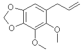 Dillapiole is a component of most every variety of dill oil from 0-25%. Substituting for safrole would lead to DMMDA-2 by Shulgin's nomenclature (30-75 mg/dose, 6-8 hrs).Myristicin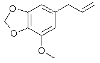 This oil is a component of nutmeg oil. The myristicin fraction along with elemicin constitute ~7% (85% of this is myristicin) of the oil. Myristicin has also been found in the seed oil of several plants[63]. The substitution of safrole with myristicin would lead to MMDA, 3-Methoxy-4,5-methylenedioxyamphetamine (100-250 mg/dose). This compound was made illegal with the first list of controlled substances.Eugenol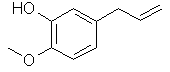 Eugenol is present in many oils. Clove oil is mostly eugenol (~95%). Allspice oil from the pimenta berry and cinnamon leaf oil also contain a high percentage of eugenol. Many other oils contain reasonable quantities of eugenol. The aminated form has not been tested as far as I know.Vanillin Vanillin as one might expect is the taste and odor of vanilla extract. Substituting for piperonal would lead to the same compound as eugenol
does. A better use for vanillin and eugenol may be to convert them to elemicin or myristicin[64].
Vanillin as one might expect is the taste and odor of vanilla extract. Substituting for piperonal would lead to the same compound as eugenol
does. A better use for vanillin and eugenol may be to convert them to elemicin or myristicin[64].
Anethole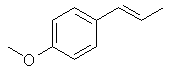 Anethole is the chief constituent of anise oil (~90%), star anise (~95%) and fennel oils. The substitution for isosafrole would lead to 4-Methoxyamphetamine. The dosage appears to be ~50-80mg and its effects not strongly psychedelic, although it has appeared on the street enough to be listed as a controlled substance.Tetramethoxyallylbenzene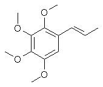 This compound has been repotred as having been prepared from parsley seed oil[65]. This has all the makings of a winner. It has been tested up to 35mg with some intoxication. Shulgin in Pihkal anticipates a possible treshold of ~50mg. |
2,5-Disubstitution Pattern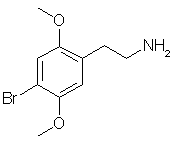 The 2,5-dimethoxy pattern is the parent of 2C-B which has come into limited view in recent years as Nexus or Erox. Nexus is the name given to 5mg tablets sold by the German pharmaceutical company Drittwelle for alleviating impotence. They refer to 2C-B as cathabromide and claim it is a drivative of a phenylethylamine from the african plant Catha Edulis. Catha Edulis is the source for cathinone, a relative of amphetamine with similar effects, but I haven't seen reference anywhere else of such a phenethylamine. If it is there it is probably in small amounts (?). This pattern is also the start of the Aleph and 2C-T series of Shulgin in Pihkal. These series have brought forth some very interesting compounds.A starting material for this series could be as innoculus as salicylaldehyde. Reaction of this in the Elbs Persulfate Oxidation [66] would lead to the 2,5-dihydroxybenzaldehyde. Methylation with methyl iodide and potassium hydroxide as base catalyst would give 2,5-dimethoxybenzaldehyde. This gets you to Shulgin's starting point for all the compounds mentioned. |
Tryptamines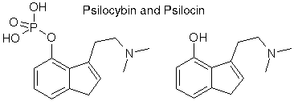 The tryptamine psilocybin and psilocin, from muschrooms, are two of the most easily produced psychedelics today. High times magazine is always filled with advertisers of mushroom spores and kits. The best I have seen is by Psylocybe Fanaticus (PF). They sell sterile spore syringes and very clear instructions for their use. The spore syringes eliminates having a sterile work area to transfer spores because you use a medium in canning jars sterilized in a pressure cooker and introduce the spores with the syringe. It works great and all the materials you need can be easily purchased with absolutely no suspicion. Others are copying this technique with PF's medium formula. Stay away from anything other than spore syringes if possible. They're not worth the hassle.These methods are great for you and your friends, but those interested in stockpiling for the future, liquid culturing is probably the way to go[67]. This entails growing the mycelia in liquid culture and extracting psilocybin from it. Mass production is easier this way. 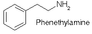 It is interesting to note how the structure for phenethylamine (XTC is a substituted phenethylamine) overlaps the tryptamine and how the tryptamine molecule overlaps LSD. |
BarbituratesBarbituric acid is the condensation product of urea and diethyl malonate (the diethyl ester of malonic acid) Barbiturates are formed from condensing urea and a derivative of diethylmalonate or by condensing barbituric acid with the appropriate alkylhalides with a base catalyst (claisen condensation)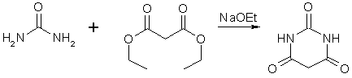 Condensation of Urea with Diethylmalonate to Give Barbituric Acid 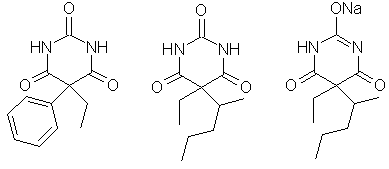 Phenobarbital, Pentobarbital and Sodium Pentobarbital |
Cocaine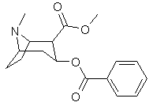 Cocaine, like the opiates and other narcotics, present significant threat in the way of addiction and physical harm. I don't like addiction and hence one reason for my choosing psychedelics instead. I am lucky not have faced addiction to these substances unlike others I have known. I try not to be a hypocrite either so for Cocaine Syntheses see the following:Robert Robertson, A Synthesis of Tropinone, Journal of the Chemical Society 762-769 and 876 (1917). Paquette and Himaste, Journal of the American Chemical Society 763-768 (1966). Tufariello et al, Pseudotropine and dl-Cocaine, Journal of the American Chemical Society 2435-2442 (1979). Hayakawa, Journal of the American Chemical Society 1786-1791 (1978). Tufariello et al, A Stereospecific Synthesis of Cocaine, Tetrahedron Letters 20, 1733-1736 (1978). |
OpiumSee Opium for the Masses by Jim Hogshire for some interesting reading. I wouldn't take opium addiction as lightly as he seems to though. One thing to mention here is that dried Papaver (Opium Poppies) can be bought in bundles from craft stores along with other dried flowers. The poppy heads contain all the seeds one should ever need with the added bonus of providing the ingredients for a little poppy tea. The poppy seeds bought in the spice section of your local grocer have many viable seeds too. |